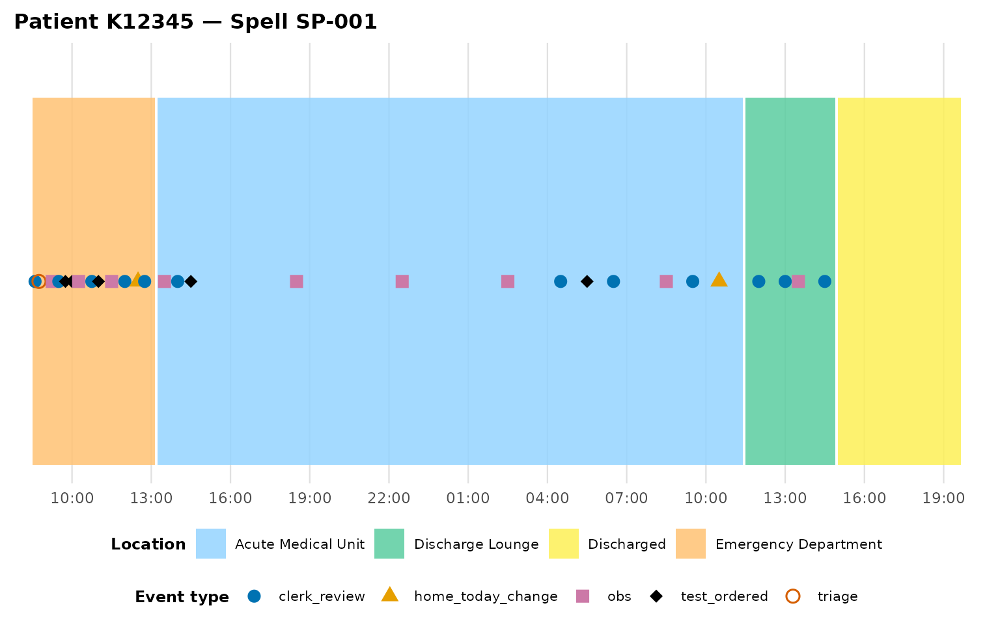
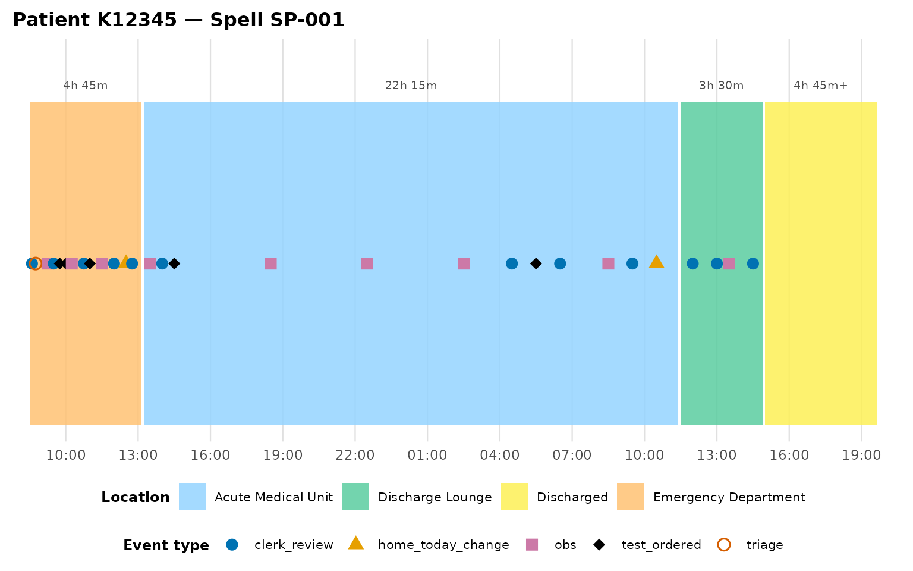
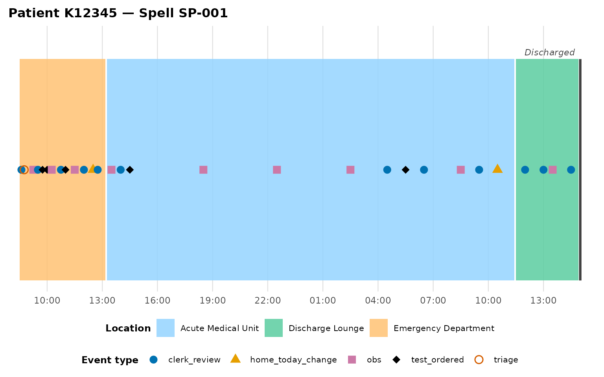
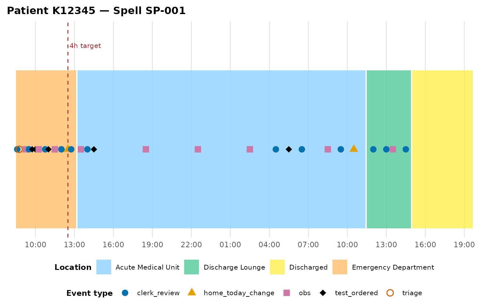
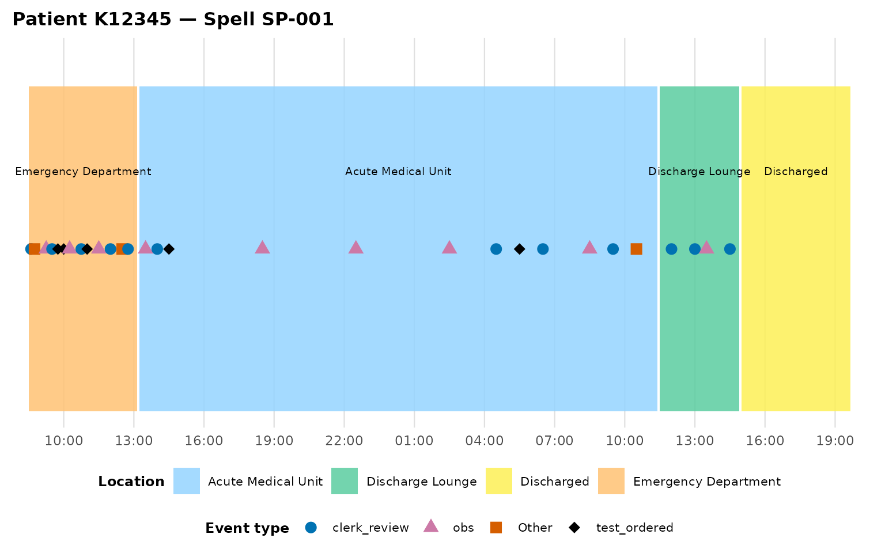

Getting started
getting-started.RmdThis vignette walks through eventviz’s core function,
plot_patient_journey(), on the bundled
example_journey dataset: a synthetic patient spell moving
through Ambulance arrival, Emergency Department, Acute Medical Unit,
Discharge Lounge, and Discharged, with clinical point events
(observations, tests, doctor reviews) sprinkled throughout.
The shape of an event log
plot_patient_journey() expects one row per event, with
(at minimum) a case identifier, a timestamp, an event-type column
marking which rows are moves to a new exclusive state, and an
activity/label column:
head(example_journey)
#> caseID K_Number timestamp act_type
#> 1 SP-001 K12345 2024-03-15 08:30:00 ed_location_move
#> 2 SP-001 K12345 2024-03-15 08:36:00 clerk_review
#> 3 SP-001 K12345 2024-03-15 08:45:00 triage
#> 4 SP-001 K12345 2024-03-15 09:15:00 obs
#> 5 SP-001 K12345 2024-03-15 09:30:00 clerk_review
#> 6 SP-001 K12345 2024-03-15 09:45:00 test_ordered
#> activity
#> 1 Emergency Department
#> 2 Ambulance handover documented
#> 3 Triage complete - Category 2
#> 4 BP 145/90, HR 88, SpO2 97%
#> 5 Initial nursing assessment
#> 6 FBC, U&E, CRP, TroponinHere act_type == "ed_location_move" or
"location_move" marks a move to a new location; everything
else (obs, clerk_review,
test_ordered, …) is an instantaneous point event that gets
plotted on the timeline but doesn’t create a new box.
The default plot
plot_patient_journey(example_journey, case_id = "SP-001")
Each coloured box is a location the case occupied over an interval;
each point is an instantaneous event, positioned on the midline of
whichever box it fell inside. The legend splits location fills from
event-type shapes/colours so the two never share a hue by default (the
colourblind-safe "okabe" palette — see
?journey_palette for the "brewer"
alternative).
Duration labels
plot_patient_journey(example_journey, case_id = "SP-001", show_duration = TRUE)
The formatted duration appears above each non-terminal box. If a
box’s end time had to be inferred (the data feed stopped before
recording the next move), its label carries a trailing "+"
so the plot never overclaims precision it doesn’t have.
Terminal states
Without more information, the final box in a spell has no natural end
— plot_patient_journey() has to infer one (by default,
extending to the last recorded event). For a spell that reaches a
genuinely terminal state — “Discharged”, “Closed”, “Formal
letter sent” — that inference is wrong: the case didn’t spend hours
“being Discharged”. Tell the function which activities are terminal and
it renders them as an instantaneous marker instead:
plot_patient_journey(
example_journey, case_id = "SP-001",
terminal_activities = "Discharged"
)
If a case’s data feed simply stops before reaching a terminal state,
the box’s right edge is drawn open (a dashed edge with an italic
"(ongoing)" label) rather than silently inventing an end —
see the linear processes vignette
for a worked example with support_ticket_example’s
still-open ticket.
Reference lines
Overlay a target/threshold line — useful for service standards like a 4-hour ED target:
plot_patient_journey(
example_journey, case_id = "SP-001",
reference_lines = data.frame(offset_hours = 4, label = "4h target")
)
reference_lines takes a data frame with one row per
line: offset_hours (numeric, hours from the spell’s first
event) and label.
Direct labels and event bucketing
For a presentation-ready plot, label_boxes = TRUE labels
each box directly at its centre, and event_type_top_n
collapses a long tail of rare event types into "Other" so
the legend stays readable:
plot_patient_journey(
example_journey, case_id = "SP-001",
label_boxes = TRUE,
event_type_top_n = 3
)
#> ℹ 2 event type(s) collapsed into "Other" (kept top 3 by frequency):
#> "home_today_change" and "triage".
Getting the underlying data
Pass return_data = TRUE to get the derived tables
alongside the plot — useful for debugging, or for building your own
custom visualisation on top of the same box/event derivation:
res <- plot_patient_journey(example_journey, case_id = "SP-001", return_data = TRUE)
names(res)
#> [1] "plot" "boxes" "events" "summary"
res$summary
#> # A tibble: 4 × 7
#> case_id location xmin xmax duration_secs
#> <chr> <chr> <dttm> <dttm> <dbl>
#> 1 SP-001 Emergency Depar… 2024-03-15 08:30:00 2024-03-15 13:15:00 17100
#> 2 SP-001 Acute Medical U… 2024-03-15 13:15:00 2024-03-16 11:30:00 80100
#> 3 SP-001 Discharge Lounge 2024-03-16 11:30:00 2024-03-16 15:00:00 12600
#> 4 SP-001 Discharged 2024-03-16 15:00:00 2024-03-16 19:45:00 17100
#> # ℹ 2 more variables: end_inferred <lgl>, terminal <lgl>summary is one row per location stay (case, location,
entry/exit, duration, and whether the end was inferred) — the same shape
summarise_journey_durations() returns across a whole
cohort. See the cohort analysis
vignette for more on aggregating across cases.
Next steps
- Bringing your own data? See
vignette("adapting-your-data")for schema autodetection and the wide-to-long pivot wrapper. - Got a process with no physical locations (a complaint, a ticket, an
approval pipeline)? See
vignette("linear-processes"). - Comparing many cases at once? See
vignette("cohort-analysis").